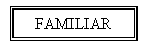
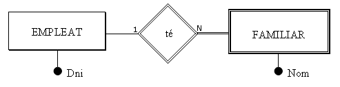

6.2 Entitats dèbils
No totes les entitats són iguals. En les normals, que anomenarem REGULARS , les ocurrències tenen existència pròpia.
En canvi, en les entitats DÈBILS , l’existència de les ocurrències depèn de l’existència de l’ocurrència d’una altra entitat, i així si desapareix aquesta última, haurien de desaparèixer també totes aquelles.
Per exemple els familiars de Joan Peris podrien ser [Marta, dona], [Isabel, filla] i [Marc, fill]. Si desapareix l’empleat Joan Peris haurien de desaparèixer també els seus familiars.
Les entitats dèbils les representarem per un doble rectangle:

La cardinalitat mínima i màxima de l’entitat regular en la relació amb la dèbil sempre és (1,1). O el que és el mateix, la dèbil sempre participa de forma total en la relació 1:N.
Tal com hem comentat les coses fins ara direm que l’entitat dèbil té una DEPENDÈNCIA EN EXISTÈNCIA[1]****.
Però podem anar més enllà, si a més de la dependència en existència considerem que per a identificar una ocurrència de l’entitat dèbil ens fa falta la clau de l’entitat regular de la qual depèn. Si en una biblioteca tenim més d’un exemplar de cada llibre, tindríem l’entitat LLIBRE (on estaria tota la informació: títol, autor, editorial, ...) i una altra que seria EXEMPLAR. Serà lògic que per a identificar un determinat exemplar utilitzem el codi del llibre més el número d’exemplar.
Un altre exemple podria ser el de PROVÍNCIES i MUNICIPIS. El codi de la província consta de 2 xifres (Castelló és el 12). Per a identificar un municipi s'utilitzen les 2 xifres del codi de la privíncia i 4 més per al municipi. I fa falta el codi de la província, perquè si no es repetirien.
Aquesta dependència, encara més restrictiva que la d’existència, l’anomenarem DEPENDÈNCIA EN IDENTIFICACIÓ. Per a marcar aquesta dependència posarem ID al costat de la relació.
En el nostre exemple, si considerem que per a identificar l’entitat FAMILIAR és suficient amb l’atribut Nom, serà en existència (el cas d’una companyia menuda). Si considerem que no és suficient, serà en identificació i la clau principal serà el DNI de l’empleat més el Nom del familiar.
Representarem la dependència en existència així (si considerem que amb el nom del familiar tenim prou per a identificar):

I la dependència en identificació així (si considerem que també fa falta l'identificador de l'empleat, que és el DNI):

Representarem aquesta última de forma alternativa amb el rombe de doble ratlla

[1] En la pràctica podríem pensar que tota entitat que participa de forma total en una relació és dèbil com a mínim en existència. Per exemple: la participació total de Familiar vol dir que tot familiar ho és d'un empleat; la dependència en existència vol dir que no pot existir un familiar sense l'empleat. Com veiem la diferència és molt subtil. A pesar d'això intentarem fer l’esforç de diferenciar ambdós casos, perquè en el següent tema sí que ens durà a dues maneres de procedir diferents.
Llicenciat sota la Llicència Creative Commons Reconeixement NoComercial CompartirIgual 3.0